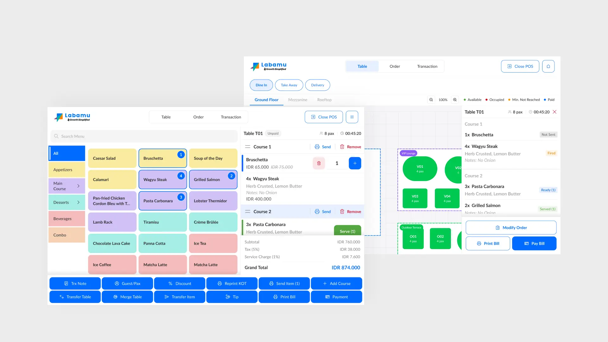

Labamu - Point of Sales

Overview
Labamu is a digital platform that helps SMEs manage transactions, financial operations, and overall business performance through an integrated business ecosystem. The platform supports merchants in simplifying operational processes and improving business efficiency across multiple industries.
In this project, I focused on the Point of Sales (POS) module for restaurant operations. The goal of the project was to transform the existing POS system into a more complete Restaurant Management System (RMS) that supports not only transaction recording, but also day-to-day restaurant operational workflows.
The new POS experience was designed to help restaurant staff manage operations more efficiently, including: table layout management, order management and tracking, kitchen display system (KDS) integration, serving workflows, and flexible payment processes such as split bills, combined bills, and multiple payment methods.
Problem & Challenge
Previously, the POS module was primarily focused on transaction recording and reporting. In this project, Labamu aimed to transform the system into a more comprehensive Restaurant Management System (RMS) capable of supporting restaurant operational workflows end-to-end. The challenge was not only about adding more features, but also ensuring the system remained practical and easy to use in fast-paced restaurant environments where staff handle multiple orders simultaneously.
Solution
To create a more effective restaurant management experience, the team conducted extensive discussions and research regarding workflow best practices, operational behaviors, and restaurant product flows. We also participated in workshops led by restaurant management system experts from Singapore, facilitated by stakeholders, to better understand real-world restaurant operational standards and best practices. These learnings became an important foundation for shaping the product direction and interaction design.
Rebuilding the design system separately between the core platform and POS module due to their significantly different visual and operational needs
Creating a UI style with larger touch targets, clearer typography, better accessibility, and more compact interaction flows
Using AI-assisted prototyping with tools such as Claude, Codex, and Antigravity to accelerate iteration, improve stakeholder demonstrations, and validate user flows more effectively
Creating interactive prototypes that helped visualize operational scenarios and edge cases more clearly before implementation
Result & Impact
Although the project is still ongoing, the new workflow and design approach have already shown positive impacts across product development and collaboration processes. The AI-assisted workflow especially helped teams communicate ideas and validate product flows more efficiently throughout the project lifecycle.
Product teams, designers, and stakeholders could review and validate workflows more clearly through AI-assisted interactive prototypes
Developers and QA teams gained a better understanding of user flows, interactions, and edge cases, while also using prototypes as implementation references
The redesigned UI and UX felt more practical, easier to read, and operationally efficient despite the product becoming significantly more complex than the previous POS system
The project workflow became more iterative and collaborative through faster prototyping and clearer communication between teams
Conclusion
This project gave me valuable exposure to real restaurant operational workflows and industry practices through direct knowledge sharing from restaurant management system experts. Understanding how restaurants actually operate became an important foundation for designing effective UI and UX solutions.
One of the most interesting parts of this experience was learning how operational insights and business knowledge can be translated into digital product experiences that genuinely help restaurant activities become more efficient and manageable.
The project also strengthened my understanding of designing operational products that prioritize usability, speed, clarity, and efficiency in high-pressure environments, while simultaneously exploring how AI can support faster and more collaborative product development workflows.